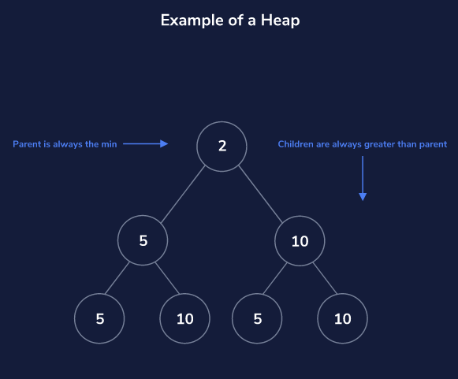
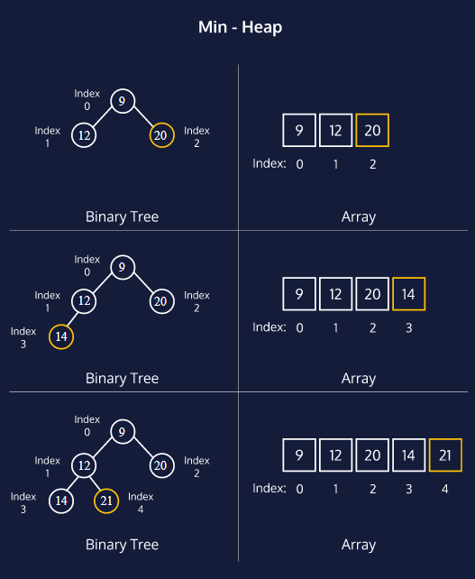

Welcome to the Heaps page. This page will give a breif overview of heaps
Heaps are used to maintain a maximum or minimum value in a dataset.
Heaps are basically trees which keep track of certain things. Heaps also have functions heapify up and heapify down, which add and remove objects from heaps. But will not be discussed on this webpage
Think of the min-heap as a binary tree with two qualities:
This image shows these incorporated values
We can picture min-heaps as binary trees, where each node has at most two children. As we add elements to the heap, they’re added from left to right until we’ve filled the entire level.
This picture compares heaps and binary trees
 © Copyright Ayaan Merchant
2020